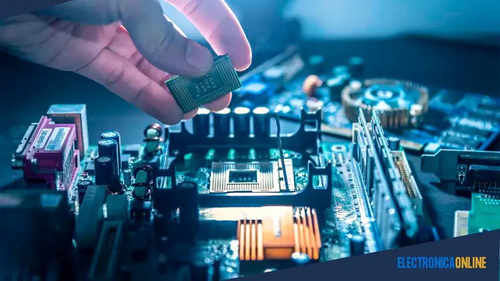

¿Qué es la Electrónica Analógica?
La electrónica analógica es una rama de la electrónica que trabaja con señales continuas. Estas señales pueden tomar infinitos valores dentro de un rango y varían de manera suave en el tiempo. A diferencia de la electrónica digital, que solo trabaja con dos niveles (0 y 1), la electrónica analógica se basa en variaciones continuas de voltaje o corriente.
Características principales
- Señales continuas: como el sonido captado por un micrófono o la luz medida por un sensor.
- Componentes típicos: resistencias, capacitores, inductores, transistores y amplificadores operacionales.
- Ejemplos comunes: radios, amplificadores de audio, televisores antiguos, fuentes de alimentación lineales.
Ejemplo práctico
Un micrófono convierte las ondas sonoras (que son analógicas) en señales eléctricas analógicas. Luego, estas señales pueden ser amplificadas por un circuito analógico antes de enviarlas a un altavoz.
